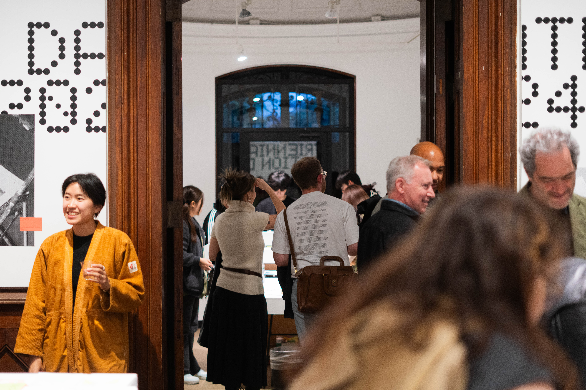
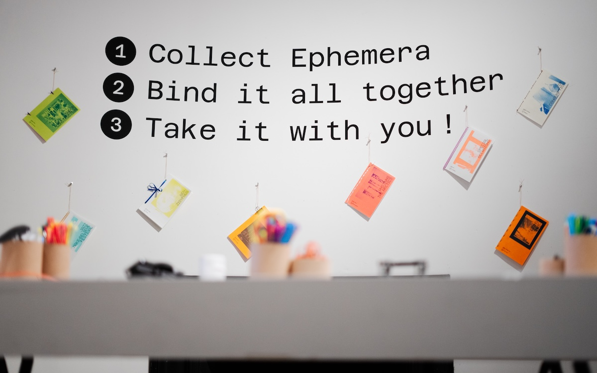
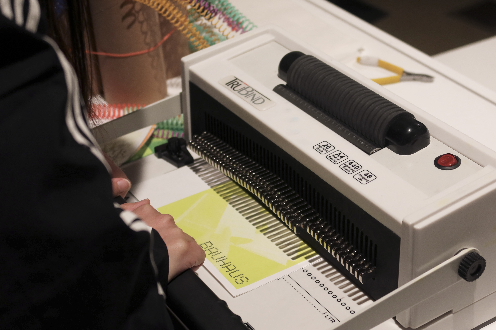

In an era dominated by visual communication and constant reproduction, Expiration Date considers the harmonious relationship between graphic design and temporality. While reproduction and redistribution is what distinguishes graphic design from other art forms, what was always ephemeral to deterioration is now subject to obsoletion of digital infrastructure and limitations of technological compatibility.
Exacerbated by the digital age and instantaneous access to graphic design material, the work on display confronts the fleeting existence of images and messages. Expiration Date embraces the designer’s capacity to duplicate and disseminate information, questions authorship and intention, and offers opportunities to experience design in new contexts. We are regularly discarding, referencing, and radically resurrecting visual narratives in response to shifting cultural forces. As nothing remains static and the value placed on visual form is in constant flux, we underscore that expiration is not an end, but rather an opportunity for reinvention.




